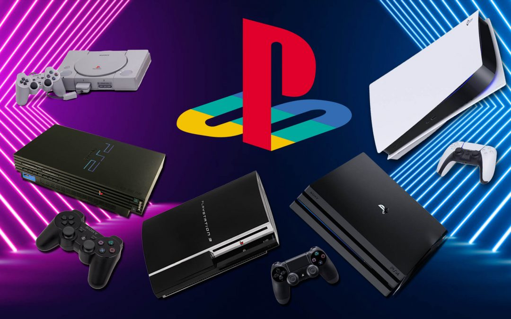
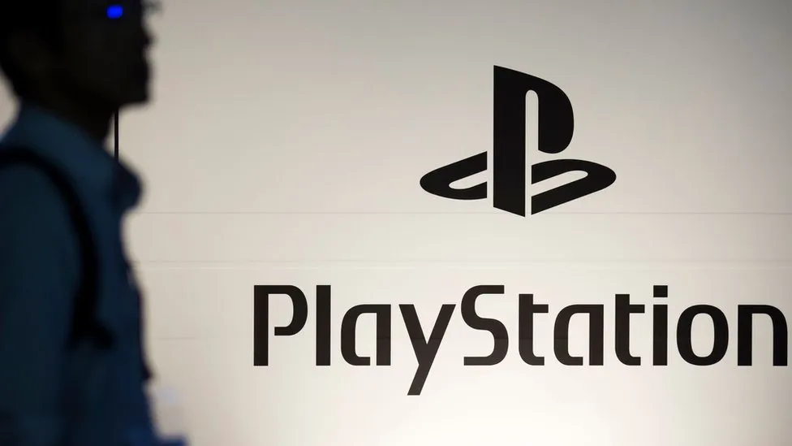

Bienvenido a la página oficial de SONY. Aquí encontrarás información sobre la empresa y sus productos, incluyendo la emocionante línea de consolas de videojuegos PLAYSTATION.
Descubre las últimas novedades sobre:
Sony Corporation es una empresa multinacional japonesa que se destaca en diversos sectores, incluyendo la electrónica de consumo, el entretenimiento y la tecnología. Aquí tienes información básica sobre la historia y algunos aspectos clave de Sony:
Historia:

Fundación y Primeros Pasos:(Década de 1950:) Sony, originalmente conocida como Tokyo Tsushin Kogyo, fue fundada por Masaru Ibuka y Akio Morita. Inicialmente, la compañía se centró en la reparación de electrodomésticos y la fabricación de productos de comunicación. Cambio de Nombre y Éxito Internacional (Década de 1960:) En 1958, la compañía cambió su nombre a Sony Corporation. Durante esta década, Sony ganó reconocimiento internacional con productos como el transistor de estado sólido y el lanzamiento de la serie de televisores Trinitron. Innovaciones en Audio y Video (Década de 1970): Sony introdujo el primer grabador de vídeo doméstico, el Betamax, en 1975. Además, lanzó el icónico Walkman en 1979, convirtiéndose en un símbolo de la cultura pop. Expansión de la Línea de Productos (Década de 1980): Durante los años 80, Sony continuó diversificando su línea de productos. Lanzó el Discman, la versión portátil del reproductor de CD, y adquirió CBS Records, fortaleciendo su presencia en la industria musical. Entrada en la Industria de los Videojuegos (Década de 1990): En 1994, Sony lanzó la consola de videojuegos PlayStation, que se convirtió en un gran éxito y marcó la entrada de la empresa en la industria de los videojuegos. Éxito Continuo en Entretenimiento (Década de 2000 y Más Allá): Sony continuó siendo una empresa importante en la industria del entretenimiento con el lanzamiento de la PlayStation 2, PlayStation 3, PlayStation 4 y PlayStation 5. También se expandió en la producción de películas y televisión.
Contribuciones Tecnológicas y Filosofía Empresarial:
Innovaciones Tecnológicas: A lo largo de los años, Sony ha estado a la vanguardia de las innovaciones tecnológicas, desde el desarrollo de la tecnología de CD y DVD hasta la introducción de televisores Bravia con pantallas OLED y 4K.
Filosofía Kando: Sony ha adoptado la filosofía japonesa de "Kando", que se refiere a la creación de experiencias emocionales a través de productos y servicios. La empresa busca ir más allá de las especificaciones técnicas para crear productos que inspiren emociones y satisfacción.
Diversificación y Desafíos:

Electrónica de Consumo:Sony ha sido un líder en la fabricación de una amplia gama de productos electrónicos de consumo, desde cámaras digitales hasta teléfonos inteligentes y sistemas de audio de alta fidelidad.
Retos en el Mercado de Smartphones:
Aunque Sony ha tenido éxito en varias áreas, ha enfrentado desafíos en el competitivo mercado de smartphones, donde la competencia es intensa.
Contribuciones Culturales y Humanitarias:
Sony Music y Sony Pictures: A través de sus divisiones de música y cine, Sony ha influido significativamente en la cultura popular global, respaldando artistas musicales y produciendo películas y programas de televisión destacados.
Responsabilidad Social Corporativa: Sony ha participado en diversas iniciativas de responsabilidad social corporativa, incluyendo programas ambientales y educativos, destacando su compromiso con el impacto social positivo.
© 2023 Sony Corporation. Todos los derechos reservados.